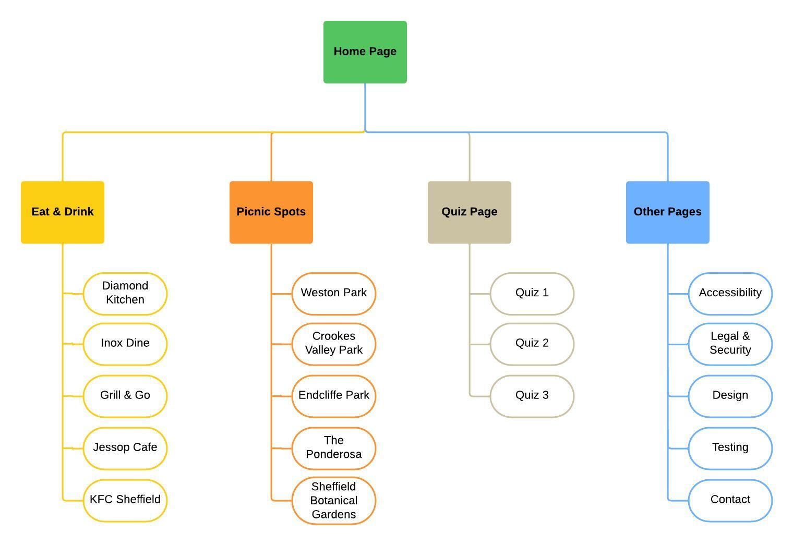
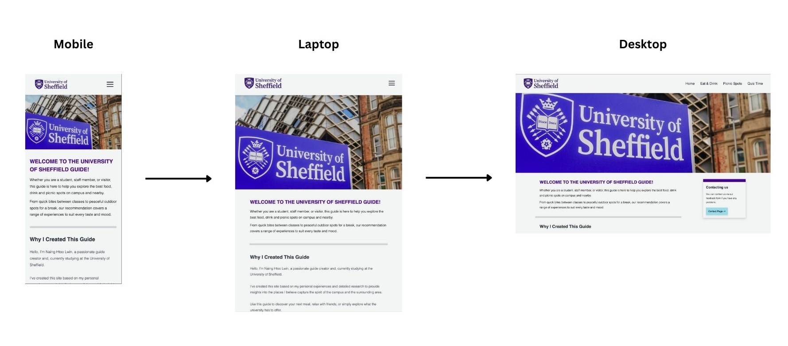
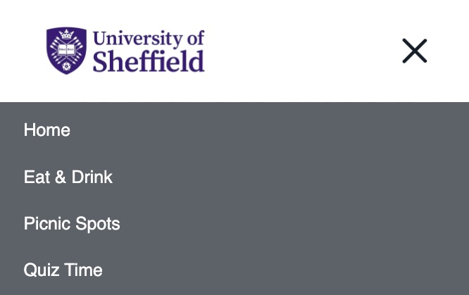

Design
On this page:
Design Concept and Goals
The design of this website is aimed at providing a serious, professional atmosphere, inspired by the University of Sheffield website. The colour palette includes purple, light blue, black and white, reflecting the University's formal and academic tone. These colours help create a trustworthy and scholarly appearance while ensuring that the website is visually appealing and easy to navigate.
Structure and Justification

The site structure is designed to be straightforward and intuitive. The main navigation will include:
- Home: The landing page with an introduction and links to key sections.
- Eat & Drink: Information on places to eat on and off the campus.
- Picnic Spots: A guide to the best outdoor spots for a picnic.
- Quiz Page: A fun and interactive quiz related to the University campus.
- Other Pages: Pages outlining accessibility, legal & security, design, testing and contact, which are placed in the footer.
This structure follows a logical flow from general information to more specific topics, keeping it user-friendly and simple.
Mobile-First Approach and Breakpoints

The mobile-first design ensures that the site is fully responsive. The mobile version will have a clean layout with a collapsible hamburger menu for navigation. On larger screens (desktop), the menu will be expanded and visible, with more content displayed side-by-side. The design will use flexbox to adjust content appropriately.
Breakpoints and tweakpoints will be used at key screen sizes such as
- Mobile (below 768px)
- Tablet (768px - 1024px)
- Desktop (above 1024px)
These breakpoints allow for smooth transitions between different screen sizes, ensuring readability and usability on any device.
Menu System: Design Consideration and Justification

For the menu system, I will implement a responsive hamburger menu on mobile devices, which will transition to a horizontal navigation bar on desktop. The hamburger menu is created using the CSS checkbox hack, a JavaScript-free technique. This method uses the :checked pseudo-class to toggle the visibility of the menu items when the checkbox, styled as a hamburger icon, is clicked. It provides an efficient and lightweight solution for creating a responsive and interactive menu without the need for JavaScript (CSS-Tricks, 2021).
References
- CSS-Tricks. (2011). The ‘Checkbox Hack’ (and things you can do with it). [online] Available at: https://css-tricks.com/the-checkbox-hack/.
- W3Schools (2024). W3Schools Online Web Tutorials. [online] W3schools.com. Available at: https://www.w3schools.com/.